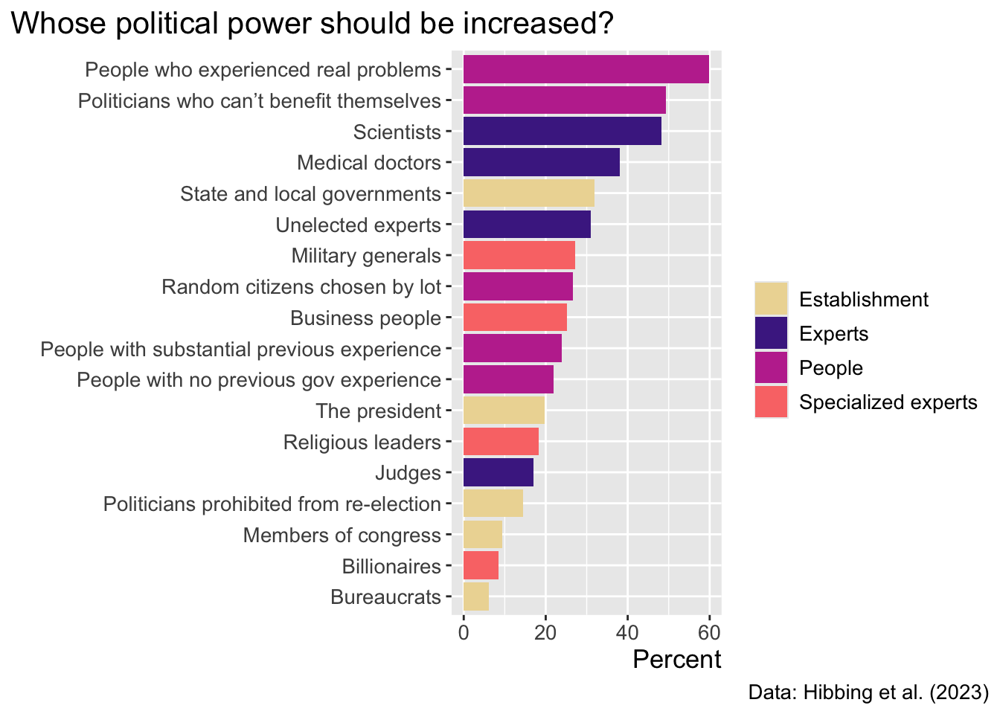
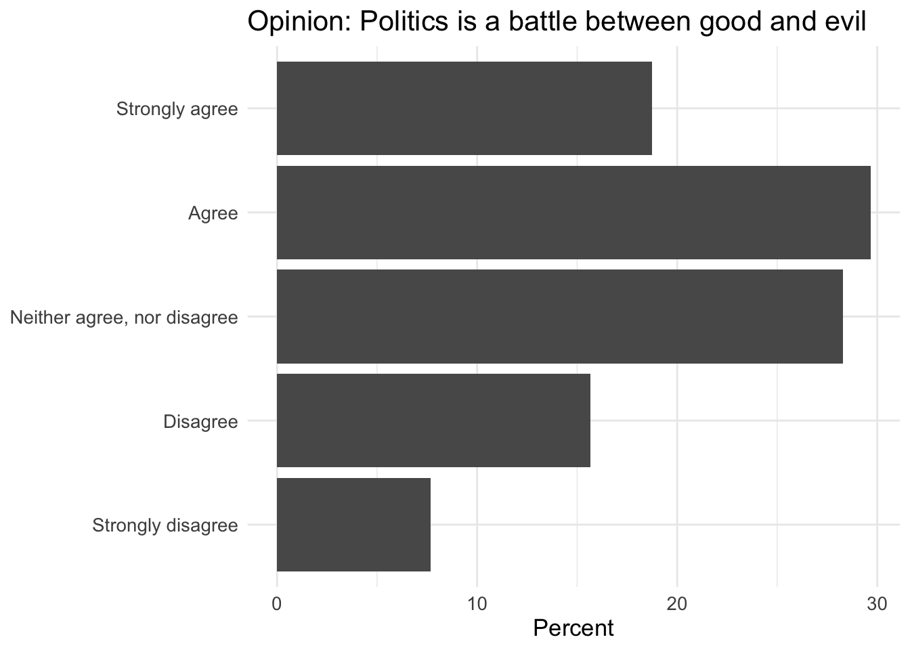
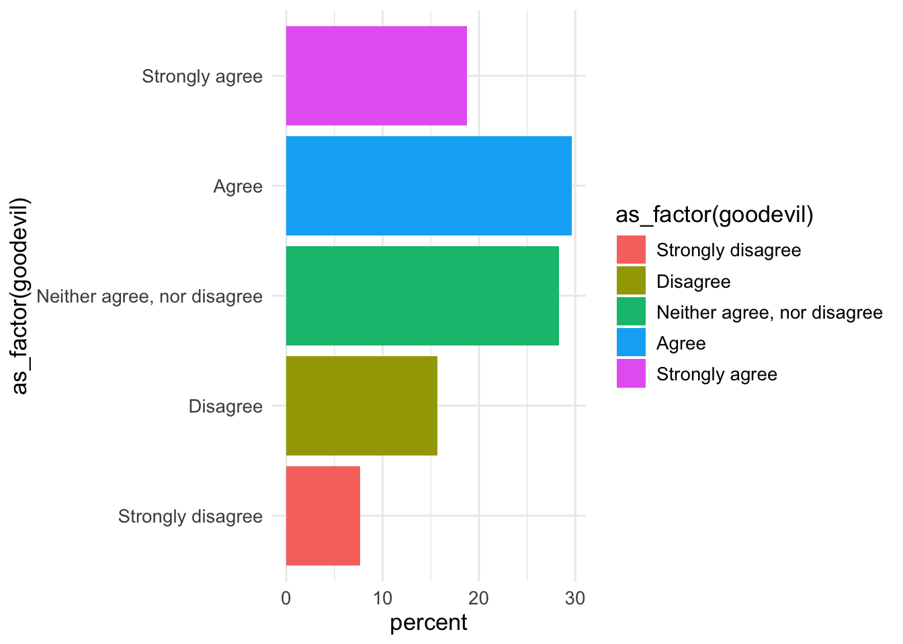
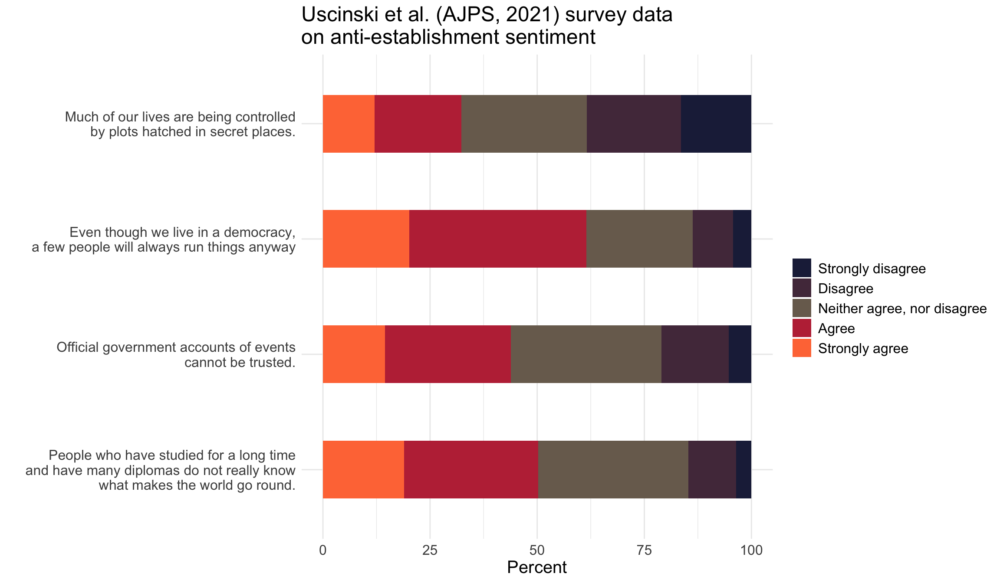
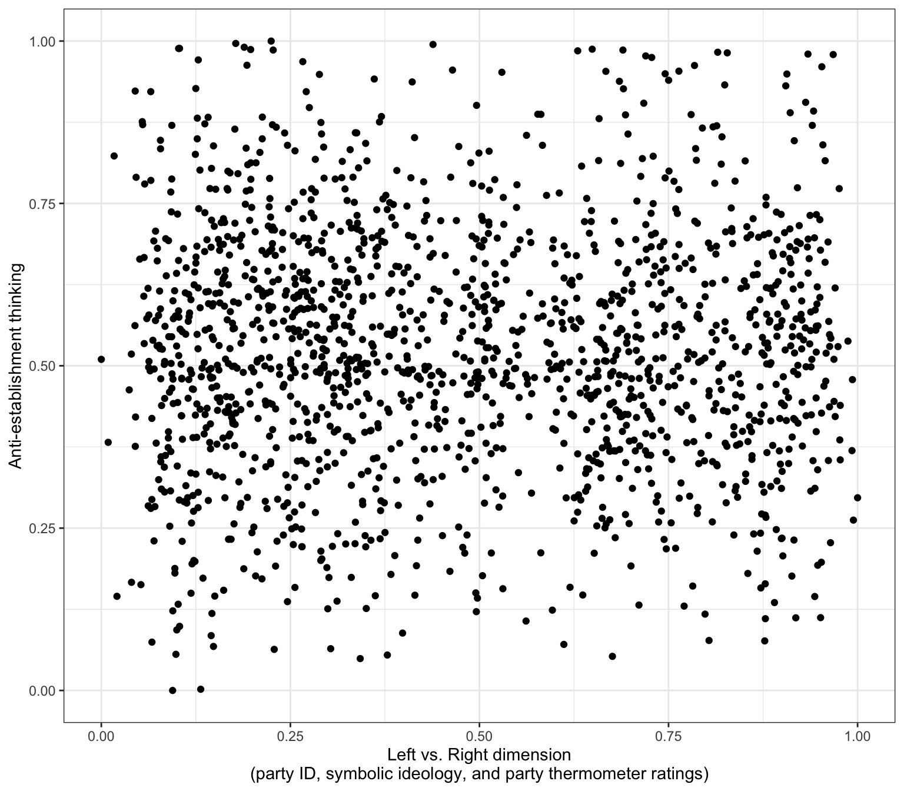
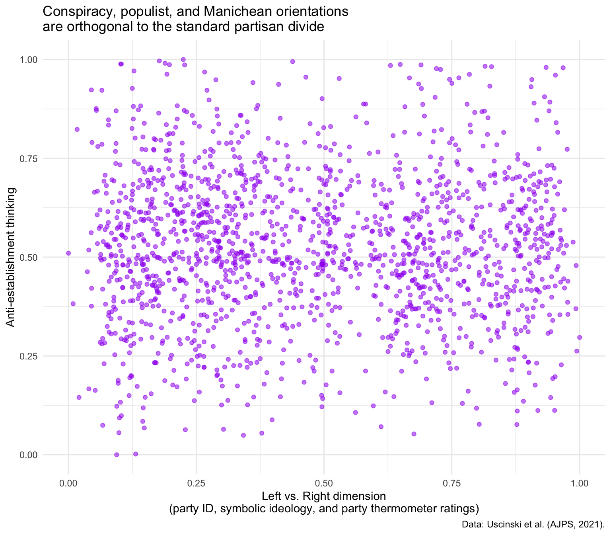
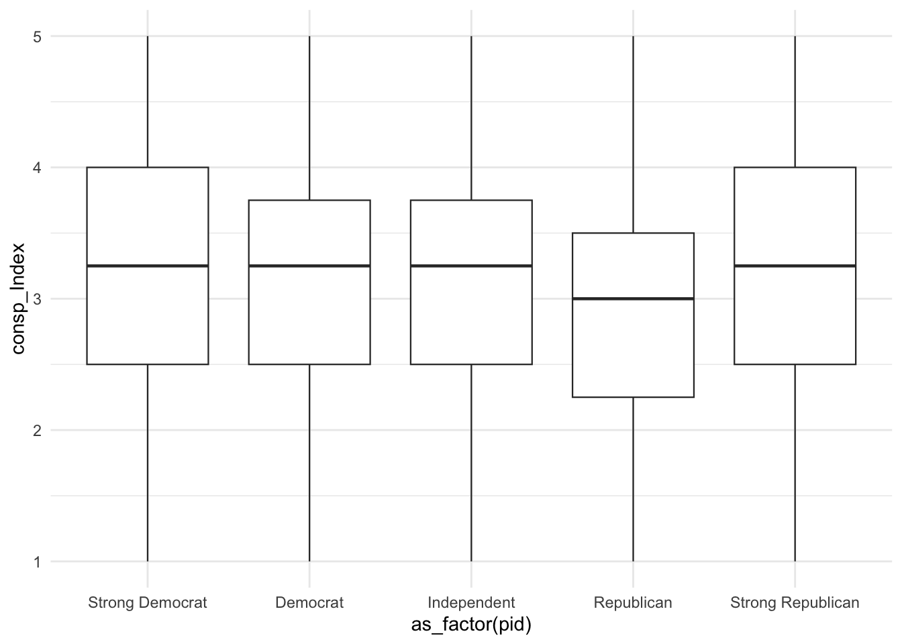
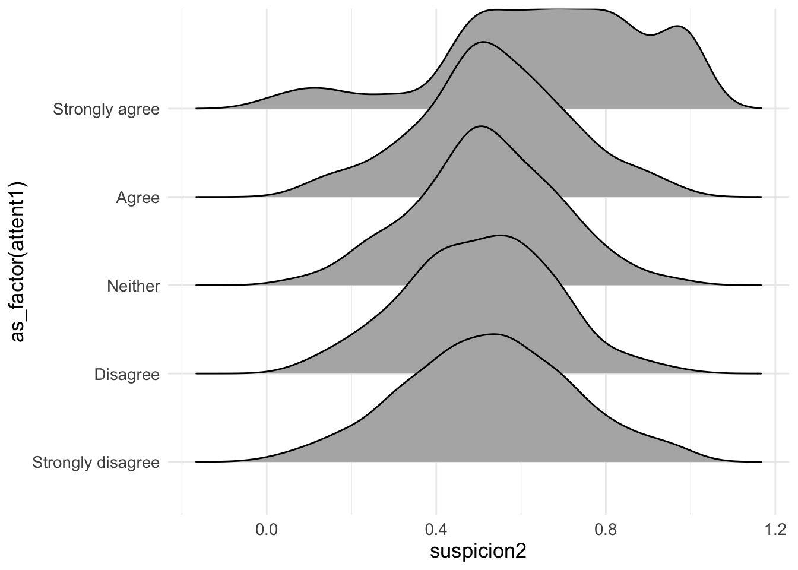

library(tidyverse)
library(haven)
library(labelled)
theme_set(theme_minimal())
theme_update(text = element_text(size=13),
#text = element_text(family="Source Sans Pro")
)
# READ IN RECODED DATA
source("data_AJPS2021/0_ajps_recode.R")5 Standard charts
We’ll make bar charts, scatterplots, stacked overlapping distributions (joyplots), and some other charts, using data on which the paper American Politics in Two Dimensions is based:
As always, take a quick look at the structure of the datasets.
In this case, we have data from from 3 surveys, which are stored in d1, d2, and d3.
head(d2)# A tibble: 6 × 77
caseid female edu black hispanic age income pid ideo interest attend
<chr> <dbl> <dbl> <dbl> <dbl> <dbl> <dbl> <dbl+l> <dbl> <dbl> <dbl>
1 R_2zZv… 0 5 0 0 30 4 1 [Str… 6 5 4
2 R_1oF5… 0 6 0 0 44 5 5 [Str… 3 4 2
3 R_3PoE… 1 6 0 0 28 2 3 [Ind… 2 2 3
4 R_dh73… 1 2 0 0 51 1 1 [Str… 1 5 4
5 R_2TTP… 1 3 1 0 29 1 1 [Str… 1 5 5
6 R_3ls3… 1 4 1 0 36 2 1 [Str… 4 4 4
# ℹ 66 more variables: youtube <dbl>, con1 <dbl+lbl>, con2 <dbl>, con3 <dbl>,
# con4 <dbl+lbl>, goodevil <dbl+lbl>, pop1 <dbl+lbl>, pop2 <dbl+lbl>,
# official <dbl+lbl>, cexaggerate <dbl>, climatechange <dbl>,
# collusion <dbl+lbl>, trumpasset <dbl>, clintonnuke <dbl>, repsteal <dbl>,
# birther <dbl>, trumpft <dbl>, bidenft <dbl>, qanonft <dbl>,
# reppartyft <dbl>, dempartyft <dbl>, sandersft <dbl>, rep <dbl>, pid2 <dbl>,
# ideo2 <dbl>, edu2 <dbl>, income2 <dbl>, youtube2 <dbl>, …We’ll start by looking at the distribution of a binary (and moralizing) view of politics; how do people respond to the prompt “Politics is a battle between good and evil”?
d2 %>%
count(goodevil) %>%
mutate(percent = n/sum(n)*100)# A tibble: 5 × 3
goodevil n percent
<dbl+lbl> <int> <dbl>
1 0 [Strongly disagree] 155 7.66
2 1 [Disagree] 317 15.7
3 2 [Neither agree, nor disagree] 572 28.3
4 3 [Agree] 600 29.7
5 4 [Strongly agree] 379 18.7 Now let’s create a cross-tab, breaking down the responses by party ID:
A binary (and moralizing) view of politics
d2 %>% group_by(pid) %>%
count(goodevil) %>%
mutate(percent = n/sum(n)*100)# A tibble: 25 × 4
# Groups: pid [5]
pid goodevil n percent
<dbl+lbl> <dbl+lbl> <int> <dbl>
1 1 [Strong Democrat] 0 [Strongly disagree] 33 6.10
2 1 [Strong Democrat] 1 [Disagree] 72 13.3
3 1 [Strong Democrat] 2 [Neither agree, nor disagree] 139 25.7
4 1 [Strong Democrat] 3 [Agree] 162 29.9
5 1 [Strong Democrat] 4 [Strongly agree] 135 25.0
6 2 [Democrat] 0 [Strongly disagree] 16 5.44
7 2 [Democrat] 1 [Disagree] 62 21.1
8 2 [Democrat] 2 [Neither agree, nor disagree] 87 29.6
9 2 [Democrat] 3 [Agree] 92 31.3
10 2 [Democrat] 4 [Strongly agree] 37 12.6
# ℹ 15 more rowsLet’s plot the frequency of this Manichean perspective:
d2 %>%
count(goodevil) %>%
mutate(percent = n/sum(n)*100) %>%
ggplot(aes(y=as_factor(goodevil),x=percent)) +
geom_bar(position="dodge", stat="identity") + xlab("Percent") + ylab(NULL) +
ggtitle("Opinion: Politics is a battle between good and evil")
Would it be useful to plot bars in different colors? Potetnially, but not like this…
d2 %>%
count(goodevil) %>%
mutate(percent = n/sum(n)*100) %>%
ggplot(aes(y=as_factor(goodevil),x=percent,fill=as_factor(goodevil))) +
geom_col()
This scale might work - here darker colors indicate greater disagreement:
d2 %>%
count(goodevil) %>%
mutate(percent = n/sum(n)*100) %>%
ggplot(aes(y=as_factor(goodevil),x=percent,fill=as_factor(goodevil))) +
geom_col() +
scale_fill_viridis_d() +
labs(x="Proportion of respondents", y= "", fill = "",
subtitle = "Opinion: Politics is a battle between good and evil", caption= "Data: Uscinski et al. (AJPS, 2021).")
5.1 Faceting by party ID
Let’s try to:
- add
facet_wrap(~pid) - which means we also have to use
group_by(pid)before runningcount()
d2 %>% group_by(pid) %>%
count(goodevil) %>%
mutate(percent = n/sum(n)*100) %>%
ggplot(aes(y=as_factor(goodevil),x=percent,fill=as_factor(goodevil))) +
geom_col() + scale_fill_viridis_d() +
labs(x="Proportion of respondents", y= "", fill = "", subtitle = "Opinion: Politics is a battle between good and evil", caption= "Data: Uscinski et al. (AJPS, 2021).") +
facet_wrap(~pid)
We really need to show the party labels, not their numbers.
Here as_factor(variable) will work as long as variable is indeed labelled:
d2 %>% group_by(pid) %>%
count(goodevil) %>%
mutate(percent = n/sum(n)*100) %>%
ggplot(aes(y=as_factor(goodevil),x=percent,fill=as_factor(goodevil))) +
geom_col() + scale_fill_viridis_d() +
labs(x="Proportion of respondents", y= "", fill = "", subtitle = "Opinion: Politics is a battle between good and evil", caption= "Data: Uscinski et al. (AJPS, 2021).") +
facet_wrap(~as_factor(pid))
Are stronger partisans are more Manichean on average?
d2 %>% group_by(pid) %>%
count(goodevil) %>%
mutate(percent = n/sum(n)*100) %>%
ggplot(aes(y=as_factor(pid),x=percent,fill=as_factor(goodevil))) +
geom_col() +
scale_fill_viridis_d(alpha=.885) +
labs(x="Proportion of respondents", y= "", fill = "",
title = "Opinion: Politics is a battle between good and evil", caption= "Data: Uscinski et al. (AJPS, 2021).")5.2 Showing more variables together
Let’s create several data objects: each of them will contain responses to the components of the conspiracy thinking scale:
pop2share <- d2 %>%
count(pop2) %>%
mutate(percent = n/sum(n)*100) %>%
mutate(categories = as_factor(pop2)) %>%
mutate(q = "People who have studied for a long time\nand have many diplomas do not really know\nwhat makes the world go round.")
officialshare <- d2 %>%
count(official) %>%
mutate(percent = n/sum(n)*100) %>%
mutate(categories = as_factor(official)) %>%
mutate(q = "Official government accounts of events\ncannot be trusted.")
con1share <- d2 %>%
count(con1) %>%
mutate(percent = n/sum(n)*100) %>%
mutate(categories = as_factor(con1)) %>%
mutate(q = "Even though we live in a democracy,\na few people will always run things anyway")
con4share <- d2 %>%
count(con4) %>%
mutate(percent = n/sum(n)*100) %>%
mutate(categories = as_factor(con4)) %>%
mutate(q = "Much of our lives are being controlled\nby plots hatched in secret places.")Create one larger data objhect:
shareShow <-
bind_rows(
pop2share,
officialshare,
con1share,
con4share
) %>%
filter(!is.na(categories))
head(shareShow)# A tibble: 6 × 8
pop2 n percent categories q official con1 con4
<dbl+lbl> <int> <dbl> <fct> <chr> <dbl+lb> <dbl> <dbl>
1 1 [Strongly disagree] 72 3.56 Strongly … "Peo… NA NA NA
2 2 [Disagree] 226 11.2 Disagree "Peo… NA NA NA
3 3 [Neither agree, nor di… 709 35.0 Neither a… "Peo… NA NA NA
4 4 [Agree] 633 31.3 Agree "Peo… NA NA NA
5 5 [Strongly agree] 383 18.9 Strongly … "Peo… NA NA NA
6 NA 107 5.29 Strongly … "Off… 1 [Str… NA NA Make a plot:
shareShow %>%
ggplot(aes(y=as_factor(q),x=percent,fill=as_factor(categories))) +
geom_bar(position="stack", stat="identity", width = .5) +
jcolors::scale_fill_jcolors(palette = "pal4") +
theme_minimal() + theme(text = element_text(size=15)) +
labs(y = "",x = "Percent", fill = "",title = "Uscinski et al. (AJPS, 2021) survey data\non anti-establishment sentiment")
Look at the components of jcolors.
jcolors::display_all_jcolors()
5.3 Putting anti-establishment thinking on the 2nd axis
d1 %>% ggplot(aes(x = leftright2, y = suspicion2)) +
geom_point() +
labs(x = "Left vs. Right dimension\n(party ID, symbolic ideology, and party thermometer ratings)",
y = "Anti-establishment thinking") + theme_gray()d1 %>% ggplot(aes(x = leftright2, y = suspicion2)) +
geom_point() +
labs(x = "Left vs. Right dimension\n(party ID, symbolic ideology, and party thermometer ratings)",
y = "Anti-establishment thinking") +
theme_bw()d1 %>% ggplot(aes(x = leftright2, y = suspicion2)) +
geom_point() +
labs(x = "Left vs. Right dimension\n(party ID, symbolic ideology, and party thermometer ratings)",
y = "Anti-establishment thinking") +
theme_minimal()d1 %>% ggplot(aes(x = leftright2, y = suspicion2)) +
geom_point(color = "purple", alpha=.55) +
labs(x = "Left vs. Right dimension\n(party ID, symbolic ideology, and party thermometer ratings)",
y = "Anti-establishment thinking", title = "Conspiracy, populist, and Manichean orientations\nare orthogonal to the standard partisan divide", caption = "Data: Uscinski et al. (AJPS, 2021).") +
theme_minimal()
5.4 Conspiratorial orientation and PID
In principle, a box plot might make sense in this context…
d2 %>%
ggplot(aes(x=as_factor(pid), y=consp_Index)) +
geom_boxplot(size=.4) +
theme_minimal() 
You could simultaneously display all respondets (jittered):
d2 %>%
ggplot(aes(x=as_factor(pid), y=consp_Index)) +
geom_boxplot(size=.4) +
geom_jitter(color="purple",alpha=.4,width = .1) +
theme_minimal() 
Make small edits:
d2 %>%
ggplot(aes(x=as_factor(pid), y=consp_Index)) +
geom_boxplot(size=.4) +
geom_jitter(color="purple",alpha=.4,width = .1) + theme_minimal() +
labs(y="Conspiratorial thinking\n(Average agreement with 4 questions)",x = "")Perhaps even better:
d2 %>%
ggplot(aes(x=as_factor(pid), y=consp_Index)) +
geom_boxplot(size=.4) + geom_jitter(color="purple",alpha=.4,width = .1) + theme_minimal() +
labs(y="Conspiratorial thinking\n(Average agreement with 4 questions)",x = "",subtitle = "Conspiratorial thinking is uncorrelated with partisanship",
caption = "Q1: Even though we live in a democracy, a few people will always run things anyway.
Q2: The people who really run the country, are not known to the voters.
Q3: Big events like wars, the recent recession, and the outcomes of elections are controlled\nby small groups of people who are working in secret against the rest of us.
Q4: Much of our lives are being controlled by plots hatched in secret places.")5.5 All 3 components of the anti-est. orienation
d2 %>%
ggplot(aes(x=as_factor(pid), y=suspicion2)) +
geom_boxplot(fill="purple", alpha=.2) +
geom_jitter(alpha=.2,width = .11,color="purple4") +
theme_minimal() +
labs(y="Conspiratorial thinking + Populism + Manichean outlook",x = "")
5.6 Narcissism as a correlate for conspiracy thinking?
d1 %>% filter(!is.na(attent1)) %>%
ggplot(aes(y = as_factor(attent1), x= suspicion2)) +
geom_density_ridges()d1 %>% filter(!is.na(attent1)) %>%
ggplot(aes(y = as_factor(attent1), x= suspicion2)) +
geom_density_ridges(
fill = "#00AFBB",
quantile_lines = TRUE, quantiles = 2,alpha = .9,color = "white") +
labs(y= "I tend to want others to admire me",x="Conspiracy thinking")
d1 %>% filter(!is.na(attent1)) %>%
ggplot(aes(y = as_factor(attent1), x= suspicion2)) +
geom_density_ridges(
fill = "#00AFBB",
quantile_lines = TRUE, quantiles = 2,alpha = .9,color = "white") +
xlim(0,1) + labs(y= "I tend to want others to admire me",x="Conspiracy thinking")
d1 %>% filter(!is.na(attent1)) %>%
ggplot(aes(y = as_factor(attent1), x= suspicion2)) +
geom_density_ridges(
fill = "#00AFBB",
quantile_lines = TRUE, quantiles = 2,alpha = .9,color = "white") +
xlim(0,1) + labs(y= "I tend to want others to admire me",
x = "The horizontal dimension measures how strongly respondents exhibit 3 traits:
1. Conspiratorial thinking (e.g. \"Our lives are controlled by secret plots\")
2. Populist beliefs
3. Manichean political views",caption = "Data: Uscinski et al. (AJPS, 2021).")d1 %>%
ggplot(aes(x=narcissism,y=suspicion2)) +
geom_smooth() + labs(x = "Narcissism", y="Anti-establishment orientation") d1 %>%
ggplot(aes(x=narcissism,y=suspicion2)) +
geom_smooth() + labs(x = "Narcissism", y="Anti-establishment orientation") +
ggside::geom_xsidehistogram() +
ggside::ggside(x.pos = "bottom") 5.7 Mainstream news
ggpubr::ggarrange(
d1 %>%
ggplot(aes(x=suspicion2,y=msm)) +
geom_smooth() +
labs(x = "Anti-establihment orientation", y="Much of the mainstream news is deliberately slanted to mislead us") +
ggside::geom_xsidehistogram() +
ggside::ggside(x.pos = "bottom") ,
d1 %>%
ggplot(aes(x=narcissism,y=msm)) +
geom_smooth() +
labs(x = "Narcissism", y="Much of the mainstream news is deliberately slanted to mislead us") +
ggside::geom_xsidehistogram() +
ggside::ggside(x.pos = "bottom")
)
collmod <- lm(msm ~ clintonft*suspicion2, data=d1)
ggeffects::ggeffect(collmod, terms=c("suspicion2","clintonft")) %>% plot() +
labs(color="Rating of Hillary Clinton",y="Much of the mainstream news is deliberately slanted to mislead us",
x="Anti-establishment orientation",title="")“I often disagree with conventional views about the world”
ggpubr::ggarrange(
d1 %>%
ggplot(aes(x=suspicion2,y=conwis)) +
geom_smooth() +
labs(x = "Anti-establihment orientation", y="I often disagree with conventional views about the world") +
ylim(c(1,5)),
d1 %>%
ggplot(aes(x=narcissism,y=conwis)) +
geom_smooth() +
labs(x = "Narcissism", y="I often disagree with conventional views about the world") +
ylim(c(1,5))
)5.8 Denial of climate change
table(d2$climatechange)
1 2 3 4 5
733 454 395 233 206 table(d2$climatechangeBIN)
0 1
1582 439 d2 %>% count(climatechangeBIN)# A tibble: 3 × 2
climatechangeBIN n
<dbl> <int>
1 0 1582
2 1 439
3 NA 2Are the missing observations the same for the original and the recoded variable? (If not, we would want to check whether earlier code did something unintended.)
d2 %>% count(climatechangeBIN,climatechange)# A tibble: 6 × 3
climatechangeBIN climatechange n
<dbl> <dbl> <int>
1 0 1 733
2 0 2 454
3 0 3 395
4 1 4 233
5 1 5 206
6 NA NA 2